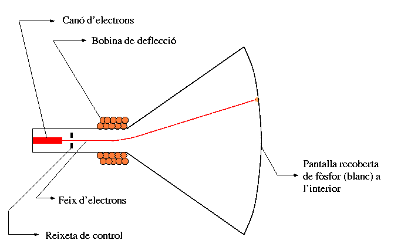

La figura següent mostra una pantalla típica d'un sol color, esquemàticament. Consta d'un cos de vidre tancat en el que s'ha fet el buit, i que conté un coll en el que hi ha un canó d'electrons capaç de produir un feix continu d'electrons cap a una pantalla oposada al coll, que conté una fina capa de fòsfor a l'interior (aquest component s'anomena un tub de raigs catòdics). Quan el feix d'electrons incideix sobre el fòsfor aquest emet una llum d'un color que li és característic. Aquest serà l'únic color que aquesta pantalla ens mostri.
|  |
Sense res més, però,
l'únic que veuriem fora un punt brillant al centre de la
pantalla, del color del fòsfor utilitzat, i la resta fosca. Per
tal de poder adreçar el feix d'electrons a diferents llocs de
la pantalla, es col·loquen al voltant del coll dues bobines de
tal forma que al fer-hi passar corrent es generen dos camps
magnètics perpendiculars. Segons la intensitat d'aquests camps,
el feix d'electrons es torça ("deflecciona") més o menys en
cada una de dues direccions perpendiculars: vertical i
horitzontal. D'aquesta manera podem fer que el punt brillant
aparegui en qualsevol posició de la pantalla.